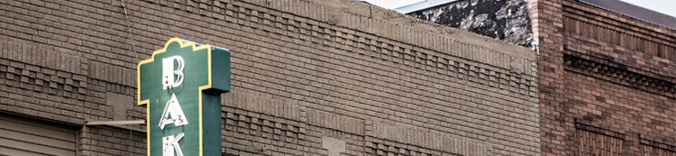

Digital art for me is photography, and occasionally manipulating those digital photos. Above is an example of a photograph taken of the local bakery sign. If you would like to view more of my photographs, including one of me Photoshopped into a Lego skate park, check me out on flickr.